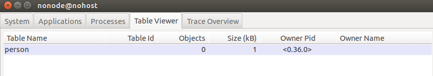

Erlang存储模块之ETS
创建:
new/2
new(Name, Options) -> tid() | atom()
Name = atom()
Options = [Option]
Option = Type | Access | named_table | {keypos,Pos} | {heir,pid(),HeirData} | {heir,none} | Tweaks
Type = set | ordered_set | bag | duplicate_bag
Access = public | protected | private
Tweaks = {write_concurrency,boolean()} | {read_concurrency,boolean()} | compressed
Pos = integer()
HeirData = term()
首先ets中保存的是元组(tuple),元组的第一个元素为key
Type
即类型,set是异键表,表示这个ets中的key是唯一的,不能相同,bag表示的是同键表,它允许多个元素有相同的key,但是key之后的元素不能相同,即不能有完全相同的tuple.order_set是set的变种,表示按key排序的ets表,duplicate_bag表示key之外的元素也可以相同,即可以存在完全相同的tuple.
set: {playerid1, <<”yuyouqi”>>, 1},{playerid2, <<”youthy”>>, 0}. —default type
bag: {playerid1, <<”yuyouqi”>>, 1}, {playerid1, lvl90}.
duplicate_bag: {playerid1, hello}, {playerid1, hello}….{playerid1, hello}
还需要注意的是orderd_set 里面判断key是否相同用的是==而不是=:=,也就意味着1和1.0是相同的key,而其他类型的ets则不是.
Access
public是任何进程都可读写这个ets
protected是只有创建者进程可以改写ets,其他进程只能读取,这个是默认选项
private是只有创建者进程可以读写.
{keypos, Pos}
用来指定Pos位置为key.
在不指定任何Option的时候,默认是以上三个[set, protected, {keypos, 1}]
其他
named_table 指定可以通过Name访问这个ets.
{heir,Pid,HeirData} | {heir,none}这个用来控制继承,在创建一个ets时,如果声明了这个,表示这个ets的owner死掉之后,将发送{‘ETS-TRANSFER’,tid(),FromPid,HeirData}这个消息给Pid这个进程,其中tid()是ets的table id.看以下的例子1
2
3
4
5
6
7
8
91> HeirPid = spawn(fun() -> receive {'ETS-TRANSFER', Tid, FromPid, HeirData} -> ets:insert(Tid, HeirData), timer:sleep(100000) end end).
%% 创建用于继承的进程
<0.34.0>
2> OwnerPid = spawn(fun() -> ets:new(person, [named_table, {heir, HeirPid, {1, youthy}}]), receive die -> ok end end).
<0.36.0>
%% 创建用于初始化ets的进程,声明heir参数.
3> observer:start().
ok
%% 启动观察器

此时我们可以看到person这个表的owner是<0.36.0>1
2
3
4
5
6
7
8
9
104> ets:tab2list(person).
[]
%% person中没有任何数据
5> OwnerPid ! die.
die
%% 让OwnerPid死亡
6> observer:start().
ok
7> ets:tab2list(person).
[{1,youthy}]

再次观察可以看到person这个表已经继承给了HeirPid,并且里面有了数据.数据是我主动插入的HeirData.
{write_concurrency,boolean()}/{read_concurrency,boolean()}/compressed
write,read默认都是false,当分别指定为true时,编译器会优化,会使write更快,read更快,但是在读写之间的切换会很慢,只适合于单纯的写表或读表.
compressed会压缩ets节省空间,但是对ets的操作尤其,match,select等遍历所有元素的操作会慢很多,慎用.
对表的操作
上面完成了对ets的创建,接下来自然就是对ets的操作.
一.插入
insert/2
insert(Tab, ObjectOrObjects) -> true
Types:
Tab = tid() | atom()
ObjectOrObjects = tuple() | [tuple()]
Tab为ets的TableId, 如果声明为named_table可以为对应的名字.
1.insert是原子操作,BIF,不管object是多个tuple组成的list还是单独一个tuple
2.如果像set表中插入具有相同key的多个元素,则只有一个能被插入,而且不知道具体哪个会被插入,如果是order_set要记住此时key相同的原则不是靠=:=而是==,也就是match(模式匹配)和equal(相等)的区别
insert_new/2
insert_new(Tab, ObjectOrObjects) -> boolean()
Types:
Tab = tid() | atom()
ObjectOrObjects = tuple() | [tuple()]
大体与insert相同,只不过这个insert直插入ets中不存在键值,当发现key在ets表中已经存在,则返回false.也是原子操作,也就是就算是insert_new一个list的东西,只要有一个key存在了,这个插入就是失败的
二.查询
lookup/2
lookup(Tab, Key) -> [Object]
Types:
Tab = tid() | atom()
Key = term()
Object = tuple()
注意结果返回是list.同样order_set是特别的,1.0与1是相同的key.
lookup_element/3
lookup_element(Tab, Key, Pos) -> Elem
Types:
Tab = tid() | atom()
Key = term()
Pos = integer()
Elem = term() | [term()]
这个返回的是key的tuple里面pos位置的元素.1
2
3
4
5
61> ets:new(person, [named_table, set]).
person
2> ets:insert(person, {player1, man, sword}).
true
3> ets:lookup_element(person, player1, 3).
sword
如果pos处不存在元素则会报bagarg错误
三.删除
delete/1
delete(Tab) -> true
Types:
Tab = tid() | atom()
delete/2
删除整个ets
delete(Tab, Key) -> true
Types:
Tab = tid() | atom()
Key = term()
delete_all_objects/1
删除key所对应的键值
delete_all_objects(Tab) -> true
Types:
Tab = tid() | atom()
delete_object/2
删除Tab里面所有的值,与delete不同的是不会删掉这个ets
delete_object(Tab,Object) -> true
Types:
Tab = tid() | atom()
Object = tuple()
删除object,主要用于bag型,因为bag是key对应多个object,只删除这个object,而保留key对应其他的object.
example:1
2
3
4
5
6
7
8
9
10
11
12
13
14
15
161> ets:new(ingredients, [set, named_table]).
ingredients
2> ets:insert(ingredients, {bacon, great}).
true
3> ets:lookup(ingredients, bacon).
[{bacon,great}]
4> ets:insert(ingredients, [{bacon, awesome}, {cabbage, alright}]).
true
5> ets:lookup(ingredients, bacon).
[{bacon,awesome}]
6> ets:lookup(ingredients, cabbage).
[{cabbage,alright}]
7> ets:delete(ingredients, cabbage).
true
8> ets:lookup(ingredients, cabbage).
[]
三.其他
tab2list/1
tab2list(Tab) -> [Object]
Types:
Tab = tab()
Object = tuple()
Returns a list of all objects in the table Tab.
列出Tab中所有元素
all/1
all() -> [Tab]
Types:
Tab = tid() | atom()
列出当前节点所有的ets
tab2file/2
tab2file(Tab, Filename) -> ok | {error, Reason}
Types:
Tab = tab()
Filename = file:name()
Reason = term()
Dumps the table Tab to the file Filename.
tab2file/3
tab2file(Tab, Filename, Options) -> ok | {error, Reason}
Types:
Tab = tab()
Filename = file:name()
Options = [Option]
Option = {extended_info, [ExtInfo]}
ExtInfo = md5sum | object_count
Reason = term()
将ets储存到文件,
extended_info 选项参数指定什么额外信息要在转储过程中一同被写进，参数选项有以下值：
object_count：被标记在文件尾后的实际被写进文件的对象数量。
md5sum：在文件里的文件头数据和对象数据都会用内置的 MD5 函数来效验。所有对象数据的 MD5 校验值会被卸载文件尾，因此读取数据的验证将检测在文件数据里的校验值。
不管参数 extended_info 是否使用，在 stdlib-1.15.1 之前的 ets 版本该参数无效。反之可以将文件中的ets读入.
file2tab/1
file2tab(Filename) -> {ok, Tab} | {error, Reason}
Types:
Filename = file:name()
Tab = tab()
Reason = term()
file2tab/2
file2tab(Filename, Options) -> {ok, Tab} | {error, Reason}
Types:
Filename = file:name()
Tab = tab()
Options = [Option]
Option = {verify, boolean()}
Reason = term()
file2tab 的option是[{verify, true|false}], 默认是false,即是否验证.当指定为true时,如果tab2file时没有指定{extended_info},则写入内存时比较大小是否一致,在ets为public或者该ets在写入的时候同时更新了数据,很容易在读入时出错,所以一般需要指定{extended_info, [object_count]},写入实际写入的大小.如果指定为{extended_info, [md5sum]},则会消耗更多的时间与cpu资源来读入.
1 | Erlang R15B (erts-5.9) [source] [smp:2:2] [async-threads:0] [hipe] [kernel-poll:false] |
first/1
first(Tab) -> Key | ‘$end_of_table’
Types:
Tab = tid() | atom()
Key = term()
last/1
last(Tab) -> Key | ‘$end_of_table’
next/2
next(Tab, Key1) -> Key2 | ‘$end_of_table’
Types:
Tab = tid() | atom()
Key1 = Key2 = term()
prev/2
prev(Tab, Key1) -> Key2 | ‘$end_of_table’
first返回ets第一个key,last返回最后一个key, 如果没有内容则返回end_of_table, 可以用next返回下一个key,prev返回上一个key1
2
3
4
5
6
7
8
9
1031> ets:tab2list(person).
[{4,ok},{1,23},{2,34}]
32> ets:first(person).
2
33> ets:next(person, 2).
1
34> ets:next(person, 1).
4
35> ets:next(person, 4).
'$end_of_table'
foldl/3
foldl(Function, Acc0, Tab) -> Acc1
Types:
Function = fun((Element :: term(), AccIn) -> AccOut)
Tab = tab()
Acc0 = Acc1 = AccIn = AccOut = term()
内部实际调用的还是lists:foldl,根据看源码发现,首先通过ets:first找到第一个key,然后调用ets:lookup(Table, Key),找到第一个元素,此时返回的元素在一个list里面,然后对这个列表用lists:foldl,Function本身是对ets每个元素执行的,包括key.例子如下.1
2
3
4
5
6
7
81> ets:new(double, [named_table]).
double
2> ets:insert(double, [{1, 14},{2, 12}, {3, 23}]).
true
3> ets:tab2list(double).
[{1,14},{2,12},{3,23}]
4> ets:foldl(fun({K, V}, Acc) -> [{K, V * 2}|Acc] end, [], double).
[{1,28},{2,24},{3,46}]
foldr/3
foldr(Function, Acc0, Tab) -> Acc1
Types:
Function = fun((Element :: term(), AccIn) -> AccOut)
Tab = tab()
Acc0 = Acc1 = AccIn = AccOut = term()
同foldl.
give_away/3
give_away(Tab, Pid, GiftData) -> true
Types:
Tab = tid() | atom()
Pid = pid()
GiftData = term()
类似于new的heir继承,在ets的owner进程调用,将Tab这个ets穿给Pid这个进程,传送的消息为{‘ETS-TRANSFER’,Tab,FromPid,GiftData},Pid可以receive这个消息做不同的事情.
i/0 i/1
i() -> ok
i(Tab) -> ok
用于查看ets信息
info/1 info/2
info(Tab) -> [{Item, Value}] | undefined
Types:
Tab = tid() | atom()
Item = atom(), see below
Value = term(), see below
info(Tab, Item) -> Value | undefined
Types:
Tab = tid() | atom()
Item, Value - see below
当Tab是个TableId,但是这个ets已经不存在的时候会返回undefined
match/2 match/3 match/1
match(Tab, Pattern) -> [Match]
Types:
Tab = tid() | atom()
Pattern = tuple()
Match = [term()]
match(Tab, Pattern, Limit) -> {[Match],Continuation} | ‘$end_of_table’
Types:
Tab = tid() | atom()
Pattern = tuple()
Match = [term()]
Continuation = term()
match(Continuation) -> {[Match],Continuation} | ‘$end_of_table’
Types:
Match = [term()]
Continuation = term()
说白了就是模式匹配,lookup只能通过key查找,而实际上面对bag类型,同样的key对应很多值,我们需要额外的添加筛选条件,所以就有了match.1
2
3
4
5
6
7
8
9
10
11
12
13
143> ets:new(player, [bag, named_table]).
player
4> ets:insert(player,[{player1, career1, goodsbag1},{player1, career2, goodsbag2}, {player1, career3, goodsbag3}]).
true
5> ets:tab2list(player).
[{player1,career1,goodsbag1},
{player1,career2,goodsbag2},
{player1,career3,goodsbag3}]
6> ets:match(player, {player1, '$1', goodsbag2}).
[[career2]]
7> ets:match(player, {player1, '$1', '_'}).
[[career1],[career2],[career3]]
8> ets:match(player, {'_', '$1', 'goodsbag3'}).
[[career3]]
$后面加数字用来表示想要得到的变量,’_’表示要忽略的变量.值得注意的是如果key指定的match是搞笑的,如果不指定key则需要遍历整个表,如果ets很大,则会很耗时.
match_object/2 match_object/3
match_object(Tab, Pattern) -> [Object]
Types:
Tab = tid() | atom()
Pattern = Object = tuple()
match_object(Tab, Pattern, Limit) -> {[Match],Continuation} | ‘$end_of_table’
Types:
Tab = tid() | atom()
Pattern = tuple()
Match = [term()]
Continuation = term()
match_object(Continuation) -> {[Match],Continuation} | ‘$end_of_table’
Types:
Match = [term()]
Continuation = term()
与match一样,只不过这个返回的是整个object,而不是$所指定的值
init_table/2
init_table(Tab, InitFun) -> true
Types:
Tab = tab()
InitFun = fun((Arg) -> Res)
Arg = read | close
Res = end_of_input | {Objects :: [term()], InitFun} | term()
官方doc上面说
This function is provided for compatibility with the dets module, it is not more efficient than filling a table by using ets:insert/2
我们可以看出这个是为了和dets兼容才提供了这个接口,其实效率不比insert高,
InitFun是个fun函数,这个函数接受read和close这两个传入值, 返回结果如Res所示,如 fun(read) -> end_of_input end. 其实这个函数的文档写的有些语焉不详,我们还是可以通过官方代码直到具体什么意思.1
2
3
4
5
6
7
8
9
10
11
12
13
14
15
16
17
18
19
20
21
22
23
24
25
26
27
28-spec init_table(Tab, InitFun) -> 'true' when
Tab :: tab(),
InitFun :: fun((Arg) -> Res),
Arg :: 'read' | 'close',
Res :: 'end_of_input' | {Objects :: [term()], InitFun} | term().
init_table(Table, Fun) ->
ets:delete_all_objects(Table),
init_table_continue(Table, Fun(read)).
init_table_continue(_Table, end_of_input) ->
true;
init_table_continue(Table, {List, Fun}) when is_list(List), is_function(Fun) ->
case (catch init_table_sub(Table, List)) of
{'EXIT', Reason} ->
(catch Fun(close)),
exit(Reason);
true ->
init_table_continue(Table, Fun(read))
end;
init_table_continue(_Table, Error) ->
exit(Error).
init_table_sub(_Table, []) ->
true;
init_table_sub(Table, [H|T]) ->
ets:insert(Table, H),
init_table_sub(Table, T).
可以看出首先用delete_all_objects删掉了之前ets的数据,之后在init_table_sub中分别插入List中的元素,在调用List,之后的initfun,遇到end_of_input为止. j
举个简单的例子1
2
3
4
5
6
7
8
9
1021> ets:new(test, [named_table]).
test
22> ets:insert(test, {test1, result1}).
true
23> ets:tab2list(test).
[{test1,result1}]
24> ets:init_table(test, fun(read) -> {[{test2, result2},{test3, result3}], fun(read) -> end_of_input end} end).
true
25> ets:tab2list(test).
[{test3,result3},{test2,result2}]
member/2
member(Tab, Key) -> true | false
如果key在Tab中有值则返回true,否则false
rename/2
rename(Tab, Name) -> Name
重命名一个table,只对有名字的table有效
safe_fixtable/2
safe_fixtable(Tab, true|false) -> true
当一个进程对某个ets用了safe_fixtable(Tab, true)后,这个进程对这个ets的first和next操作的key只返回没有返回过的key,也就是说ets表中的每个key只返回一次,为什么这么说呢.我们知道ordered_set中的key是排好序的,只要不停的next,肯定会得到更大的key,加入删除了之前一个较小的key,那么再次插入时,也不过next到这个key,但是set,bag表不是,有可能在next的过程中,如果有别的进程删除了你之前遍历过的key,之后在插入,将有可能再次next到这个key,safe_fixtable的作用就是对每个结果只返回一次,这个在游戏中对线上玩家列表的操作有一定作用,ets的官方文档中的foldl等也用到了.
Note that no deleted objects are actually removed from a fixed table until it has been released. If a process fixes a table but never releases it, the memory used by the deleted objects will never be freed. The performance of operations on the table will also degrade significantly.
值得注意的是在有进程对ets fixtable的情况对ets中数据的删除并没有真正的删除,直到这个进程死掉或者释放掉safe_fixtable为止,此时对ets的操作效率将显著降低, 所以尽量少用ets:foldl.
可参考:http://stackoverflow.com/questions/20327171/etsfoldl-vs-deleted-elements/20338795#20338795
setopts/2
setopts(Tab, Opts) -> true
opts只能是[{heir,pid(),HeirData} | {heir,none}],用于在table创建后修改继承选项,只能由table的owner调用
update_counter/3
update_counter(Tab, Key, UpdateOp) -> Result
update_counter(Tab, Key, [UpdateOp]) -> [Result]
update_counter(Tab, Key, Incr) -> Result
Types:
Tab = tid() | atom()
Key = term()
UpdateOp = {Pos,Incr} | {Pos,Incr,Threshold,SetValue}
Pos = Incr = Threshold = SetValue = Result = integer()
更新ets中的数据,省去从ets去数据,相加在存入这个流程, Threshold是阈值,根据incr的正负,当结果大于或小于阈值时,将值设为SetValue.
只能用于set和ordered_set1
2
3
4
5
6
7
8
9
10
11
12
13
14
15
16
17
18
193> ets:new(test, [named_table]).
test
4>
4> ets:insert(test,[{one, 1},{two, 2},{three, 3},{four, 4}]).
true
5> ets:update_counter(test, one, 1).
2
6> ets:tab2list(test).
[{two,2},{three,3},{one,2},{four,4}]
7> ets:insert(test,{five, haha, 5}).
true
8> ets:update_counter(test, five, {3, 1}).
6
9> ets:tab2list(test).
[{two,2},{five,haha,6},{three,3},{one,2},{four,4}]
10> ets:update_counter(test, five, {3, 1, 6, 5}).
5
11> ets:tab2list(test).
[{two,2},{five,haha,5},{three,3},{one,2},{four,4}]
update_element/3
update_element(Tab, Key, {Pos,Value}) -> true | false
update_element(Tab, Key, [{Pos,Value}]) -> true | false
Types:
Tab = tid() | atom()
Key = Value = term()
Pos = integer()
大致跟上面一样,未找到Key会返回false.
所有关于match specification
下面的函数都有用到MatchSpec这个数据类型，
定义见: [doc]: (http://www.erlang.org/doc/apps/erts/match_spec.html).
match specification用于更为复杂的匹配情况,可以用于ets和erlang:trace_pattern中,一个ms的具体例子可能如下

乍看之下是非常难懂的,抽象一下大致是这个样子
[{InitialPattern1, Guards1, ReturnedValue1},
{InitialPattern2, Guards2, ReturnedValue2}].
上面的{‘$1’,’$2’,<<1>>,’$3’,’$4’}是InitialPattern, [{‘andalso’,{‘>’,’$4’,150},{‘<’,’$4’,500}},
{‘orelse’,{‘==’,’$2’,meat},{‘==’,’$2’,dairy}}]和[{‘<’,’$3’,4.0},{is_float,’$3’}]是Guards1和Guards2,[‘$1’]是returnedvalue.
InitialPattern是将变量绑定到具体的$数字上,然后通过guard,得到returnvalue.
Guard的语序是{FunctionOrOperator, Arg1, …, ArgN},’andalso’ ‘orelse’和’<’等属于FunctionorOperator,后面的是参数.
{‘andalso’,{‘>’,’$4’,150},{‘<’,’$4’,500}}翻译过来就是 when $4 > 150 andalso $4 < 500.
如果满足这个Guard就返回$1.
当然让我们去写这样一个match是很不符合人类的发展的,所以我们要用到下面的函数
fun2ms/1
fun2ms(LiteralFun) -> MatchSpec
Types:
LiteralFun = function()
MatchSpec = match_spec()
这个函数将我们熟悉的fun函数转换成match specification的形式,这个转换过程由ms_transform完成,
需要在模块开头加上
-include_lib(“stdlib/include/ms_transform.hrl”).
需要注意的是fun的参数只有一个,只能是一个变量或者一个tuple不能使list等,不能使bit流.
1 | 1> ets:fun2ms(fun(X) when X > 10 -> X end). |
ms的在ets中的主要作用是用在select语句中,达到类似于mysql中select的效果
select/1/2/3
select(Tab, MatchSpec) -> [Match]
select(Tab, MatchSpec, Limit) -> {[Match],Continuation} | ‘$end_of_table’
select(Continuation) -> {[Match],Continuation} | ‘$end_of_table’
Types:
Tab = tid() | atom()
Match = term()
MatchSpec = match_spec()
Continuation = term()
select/2将所有符合MatchSpec的结果返回，select/3制定了limit。返回的Continuation可以用在select/1中。为何这么做？官方说明是
This is a space efficient way to work on objects in a table which is still faster than traversing the table object by object using ets:first/1 and ets:next/1.
这样节省空间，同时比用first，next更加快。
下面的例子是在player表中有两个#player结构的数据。一个返回的是10010这个id的玩家，之后调用select(C)将第二个10011玩家玩家返回同时返回end of table。如果将end of table传入select会直接返回end of table。
learn you some erlang书中的例子，1
2
3
4
5
6
7
8
9
10
11
12
13
14
15
16
17
18
19
20
2111> rd(food, {name, calories, price, group}).
food
12> ets:new(food, [ordered_set, {keypos,#food.name}, named_table]).
food
13> ets:insert(food, [#food{name=salmon, calories=88, price=4.00, group=meat},
13> #food{name=cereals, calories=178, price=2.79, group=bread},
13> #food{name=milk, calories=150, price=3.23, group=dairy},
13> #food{name=cake, calories=650, price=7.21, group=delicious},
13> #food{name=bacon, calories=800, price=6.32, group=meat},
13> #food{name=sandwich, calories=550, price=5.78, group=whatever}]).
true
14> ets:select(food, ets:fun2ms(fun(N = #food{calories=C}) when C < 600 -> N end)).
[#food{name = cereals,calories = 178,price = 2.79,group = bread},
#food{name = milk,calories = 150,price = 3.23,group = dairy},
#food{name = salmon,calories = 88,price = 4.0,group = meat},
#food{name = sandwich,calories = 550,price = 5.78,group = whatever}]
15> ets:select_reverse(food, ets:fun2ms(fun(N = #food{calories=C}) when C < 600 -> N end)).
[#food{name = sandwich,calories = 550,price = 5.78,group = whatever},
#food{name = salmon,calories = 88,price = 4.0,group = meat},
#food{name = milk,calories = 150,price = 3.23,group = dairy},
#food{name = cereals,calories = 178,price = 2.79,group = bread}]
同时在官方doc的ms_transform中有个多个子句的例子
1 | ets:select(emp_tab, ets:fun2ms( |
select_count/2
select_count(Tab, MatchSpec) -> NumMatched
Types:
Tab = tid() | atom()
Object = tuple()
MatchSpec = match_spec()
NumMatched = integer()
对MS返回为true的会计数。如下，得出player表中id大于0的玩家数。
1 | ets:select_count(player, ets:fun2ms(fun(#player{id = ID}) -> ID > 0 end)). |
select_delete/2
select_delete(Tab, MatchSpec) -> NumDeleted
Types:
Tab = tid() | atom()
Object = tuple()
MatchSpec = match_spec()
NumDeleted = integer()
大致同count，将返回true的object从表中删掉。
select_reverse/1/2/3
select_reverse(Tab, MatchSpec) -> [Match]
Types:
Tab = tid() | atom()
Match = term()
MatchSpec = match_spec()
select_reverse(Tab, MatchSpec, Limit) -> {[Match],Continuation} | ‘$end_of_table’
Types:
Tab = tid() | atom()
Match = term()
MatchSpec = match_spec()
Continuation = term()
select_reverse(Tab, MatchSpec) -> [Match]
Types:
Tab = tid() | atom()
Match = term()
MatchSpec = match_spec()
与只不过将select的结果反序，对order_set表有效，其他类型的表与select返回结果一致。1
2
3
4
5
6
7
8
9
10
11
12
13
14
15
16
171> T = ets:new(x,[ordered_set]).
2> [ ets:insert(T,{N}) || N <- lists:seq(1,10) ].
...
3> {R0,C0} = ets:select_reverse(T,[{'_',[],['$_']}],4).
...
4> R0.
[{10},{9},{8},{7}]
5> {R1,C1} = ets:select_reverse(C0).
...
6> R1.
[{6},{5},{4},{3}]
7> {R2,C2} = ets:select_reverse(C1).
...
8> R2.
[{2},{1}]
9> '$end_of_table' = ets:select_reverse(C2).
...
match_spec_compile/1
match_spec_run/2
is_compiled_ms/1
match_spec_compile(MatchSpec) -> CompiledMatchSpec
Types:
MatchSpec = match_spec()
CompiledMatchSpec = comp_match_spec()
match_spec_run(List,CompiledMatchSpec) -> list()
Types:
List = [ tuple() ]
CompiledMatchSpec = comp_match_spec()
is_compiled_ms(Term) -> boolean()
Types:
Term = term()
match_spec_compile将一个MS编译成一个不可见的内部形式供match_spec_run调用，is_compile_ms用来判断这个编译结果是否是个正确的编译，因为编译后的内部形式不能再节点间传递也不能储存在硬盘上。
比如1
ets:is_compiled_ms(ets:match_spec_compile([{'_',[],[true]}])).
返回的是true1
2
3MS = ets:match_spec_compile([{'_',[],[true]}]),
Broken = binary_to_term(term_to_binary(MS)),
ets:is_compiled_ms(Broken).
返回的是false，因为不接受外部的转化。会使其失去原有的信息。1
2
3
4MatchSpec = ets:fun2ms(fun({M, N}) when N > 3 -> M end),
CompiledMatchSpec = ets:match_spec_compile(MatchSpec),
List = [{1, 2}, {3, 4}, {5, 6}],
ets:match_spec_run(List, CompiledMatchSpec).
如果MatchSpec不是个合格的Ms会抛badarg的错误。
repair_continuation/2
repair_continuation(Continuation, MatchSpec) -> Continuation
Types:
Continuation = continuation()
MatchSpec = match_spec()
用来修复select/3返回的continuation，如果continuation在被转化为外部形势（用来在节点间传递)，会失效，但是使用repair_continuation可以恢复。
例：1
2
3
4
5
6
7
8
9
10
11
12
13
14
15
16
17
18%% 无效
T=ets:new(x,[]),
{_,C} = ets:select(T,ets:fun2ms(fun({N,_}=A)
when (N rem 10) =:= 0 ->
A
end),10),
Broken = binary_to_term(term_to_binary(C)),
ets:select(Broken).
%% 有效
T=ets:new(x,[]),
MS = ets:fun2ms(fun({N,_}=A)
when (N rem 10) =:= 0 ->
A
end),
{_,C} = ets:select(T,MS,10),
Broken = binary_to_term(term_to_binary(C)),
ets:select(ets:repair_continuation(Broken,MS)).